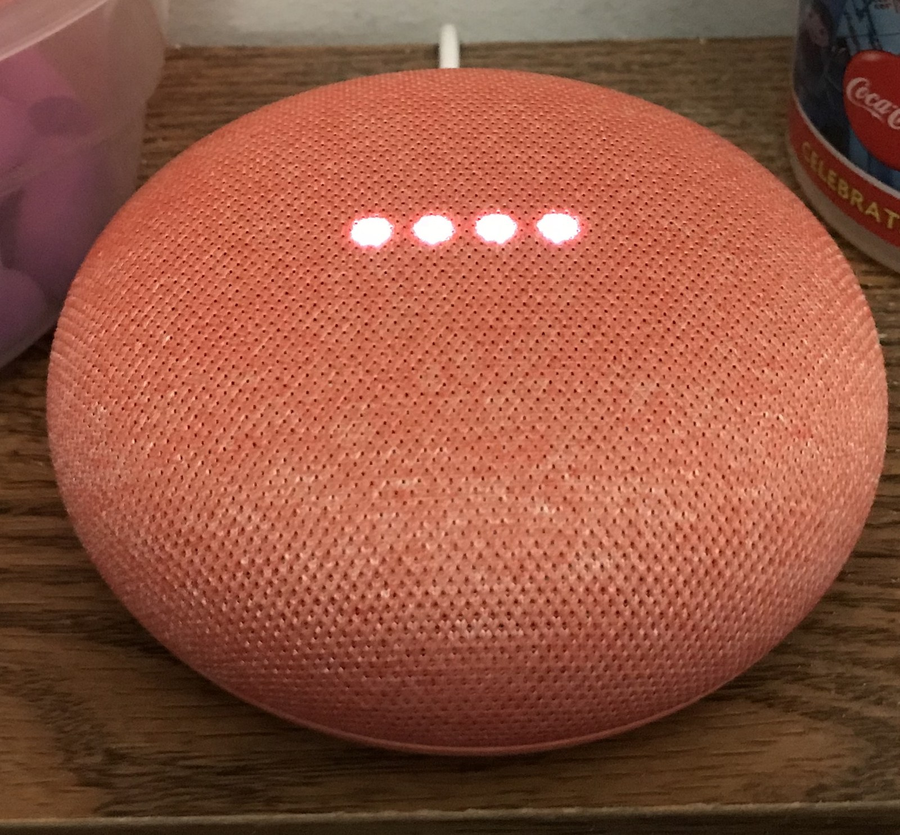

The Autopsy Report · Device #023
The Google Home Mini
The $49 fabric-covered puck that made Google Assistant the cheapest smart speaker in the room — and a close cousin of the Chromecast under the hood. Public-records edition: we haven't opened one yet.
What is this thing?
The Google Home Mini is a compact smart speaker: a hockey-puck-sized disc wrapped in fabric that listens for "Hey Google," answers questions, plays music, and controls smart-home gadgets. It was Google's answer to the Amazon Echo Dot — same idea, same $49 price, different assistant. TheStreet
The model number is H0A, filed with the FCC under ID A4R-H0A — "A4R" being Google's grantee code. Hardware database entry
Whose box is this?
Not ours — not yet. No unit of this device is on our bench. We haven't bought one, opened one, photographed one's insides, or listened to one boot. Everything on this page comes from public records: published teardowns, a hardware database entry, launch coverage, and a freely-licensed stock photo credited below. When a unit lands on our bench, this report gets a second edition with our own photos, measurements, and boot log.
A short history
- November 2016Google launches the original Google Home, its first Assistant smart speaker. TheStreet
- October 4, 2017Google announces the Home Mini at its hardware event: $49, available in stores October 19. TheStreet
- October 2017Teardowns go up within days, revealing Marvell silicon shared with the 2015 Chromecast. EDN teardown Hardware database entry
- October 2019Google replaces it with the Nest Mini (2nd gen) — same shape, better sound, a wall-mount hook, and a dedicated machine-learning chip. VentureBeat
The outside
A small puck — fabric on top, plastic base — with a microphone-mute switch on the side and a micro-USB port for power. Tap the top and it plays, pauses, or adjusts volume; four LEDs under the fabric show when it's listening. The stock photo below shows the coral (red) version. EDN teardown

The board
We haven't held this board ourselves, so this is the teardowns' account, not ours. Published teardowns show a single compact board built around a Marvell application processor — the same silicon family as the 2015 Chromecast — paired with a Marvell Wi-Fi chip, Toshiba flash, and a Texas Instruments audio amplifier driving the single speaker. The touch controls and LED array sit on the top of the assembly, under the fabric. EDN teardown Hardware database entry
One honest wrinkle: sources disagree on the RAM manufacturer. The hardware database lists a Samsung K4B4G1646E-BYK0, while teardown photography shows SK Hynix memory on at least some units. That's not a contradiction — it's a revision difference. Google sourced RAM from more than one vendor across the production run, so neither marking is universal. Hardware database entry EDN teardown
Under the microscope: the chips
What's on the board according to published teardowns, what each part does, and how sure we are. Confirmed means a primary source (the manufacturer, the FCC, or our own bench) verifies it. Likely means public hardware records agree on it, but we haven't verified it ourselves. Every row links somewhere you can read more.
| Chip | What it does | How we know | Dig deeper |
|---|---|---|---|
| Marvell 88DE3006-BTK2 | The main processor — the same Armada 1500 Mini Plus family as the 2015 Chromecast, running the speaker's software. | Likely Marking reported by published teardowns and the hardware database. | EDN teardown |
| Marvell 88W8887 | The Wi-Fi radio. | Likely Marking reported by published teardowns. | Hardware database entry |
| Toshiba TC58NVG1S3HBA16 | The flash storage — where the device's software lives when the power is off. | Likely Marking reported by published teardowns. | EDN teardown |
| TI TAS5720 | The audio amplifier — takes the digital audio and drives the speaker. | Likely Marking reported by published teardowns. | Hardware database entry |
| RAM: Samsung or SK Hynix K4B4G1646E-BYK0 reported on some units |
The speaker's short-term workspace. | Likely Vendor varies by production run — treat any single marking as revision-specific, not universal. | EDN teardown |
Datasheet note: Marvell never published public datasheets for the 88DE3006 or 88W8887, and we found no manufacturer or archive.org datasheet we could verify for the Toshiba flash or the TI amplifier. That's a documentation gap in the industry, not in the research — the markings above come from board photography in public teardowns.
The government's file on this box
The Home Mini's FCC filing sits under FCC ID: A4R-H0A. The filing's test report ties model H0A to the ID, and the internal photos were submitted under the usual 180-day confidentiality — public once the launch window passed. FCC filing
An honest note on method: the FCC's mirror page for this ID blocked our automated lookup, so we did not independently re-verify the exhibit list this week — the details above come from the filing's public record as documented in our research notes. The filing itself remains public at the link above.
Listening to it boot
We haven't — there is no unit on our bench, so there is no boot log, no serial capture, nothing. That section gets written the day one arrives.
Our rule for debug ports, whenever we do meet this hardware: we listen, we don't knock. If the board exposes a serial console, we'll connect a read-only listener and record what the device volunteers about its own startup — and publish that. We won't use it to break in, dump firmware, or bypass anything. No public teardown we've reviewed documents a debug header on this board, so even the existence of a console is currently unknown — it awaits the bench.
What we found
It's a Chromecast with a speaker attached — architecturally speaking. The Home Mini's application processor and Wi-Fi chip are the same Marvell family as the 2015 Chromecast. Google clearly liked the platform enough to reuse it across product lines. EDN teardown
The RAM lottery is real. Don't treat any single Home Mini teardown's memory marking as the whole story — Samsung and SK Hynix parts both appear in the public record, which means production spanned at least two memory vendors. Hardware database entry
What we didn't do
- This device is not on our bench. We have not disassembled one.
- We captured no boot log and ran no bench tests.
- We have not touched, extracted, modified, or shared this device's firmware.
- We have not probed any debug interface on it — none is publicly documented for this board.
- The product photo above is a freely-licensed stock image, credited in its caption — not our photography.
By the numbers
- Model: Google Home Mini (2017), H0A
- FCC ID: A4R-H0A
- Main chip: Marvell 88DE3006-BTK2 (Armada 1500 Mini Plus family)
- Audio: TI TAS5720 amplifier driving a single speaker
- Launched: October 4, 2017, at $49; in stores October 19
- Successor: Google Nest Mini (2nd gen), October 2019
Words to know
Every term this page uses, in plain English. No prior knowledge required.
- Smart speaker
- A speaker with a voice assistant built in — it listens for a wake word, then answers, plays music, or controls your home.
- System on a chip (SoC)
- The whole computer — processor and friends — on one piece of silicon.
- Flash storage
- The chip that holds the device's software when the power is off.
- Amplifier
- The chip that takes a small audio signal and makes it powerful enough to move a speaker.
- Boot log
- The text a device prints as it starts up. Engineers read it to see what's inside without opening anything.
- UART / serial console
- A simple port that lets you watch a device narrate its own startup, line by line.
- Firmware
- The software baked into the device — the part that runs before anything else.
- FCC
- The Federal Communications Commission — the U.S. agency that regulates anything that transmits radio. Every wireless gadget sold here has to pass its tests first.
- FCC ID
- The ID the FCC assigns to each approved wireless product. The first few characters are the company's grantee code; the rest is the maker's model code. Punch it into fccid.io and the whole public filing comes up.
Sources & confidence
- Launch details (date, price, availability): contemporaneous launch coverage. High confidence.
- Chip identities: published teardowns plus a hardware database entry agree on the Marvell/Toshiba/TI parts. Medium-high confidence; still Likely until our bench confirms.
- RAM vendor variation: two independent public sources name different vendors — treated as revision evidence, not a conflict. Medium confidence.
- FCC filing contents: documented in research notes; the mirror page blocked automated re-verification this week. Medium confidence — the filing itself is public at the link above.
- No debug-port documentation found in the public teardowns reviewed. If one is documented somewhere we missed, tell us.
- Anything not listed here is unknown until the bench says otherwise. We'll say so, out loud, when that's the case.
Public-records edition. This device is not on our bench. No disassembly, no boot log, no bench testing, and no firmware touched, extracted, modified, or shared. The stock photo is freely licensed and credited in its caption.
Legal note. BareBoard is an educational project. Everything on this page is assembled from public records and freely-licensed photography credited in its caption. We don't publish, host, or distribute firmware, keys, passwords, or credentials. Product names and trademarks belong to their respective owners and appear here only to identify the hardware. If you believe anything here infringes your rights, contact us and we'll address it promptly.